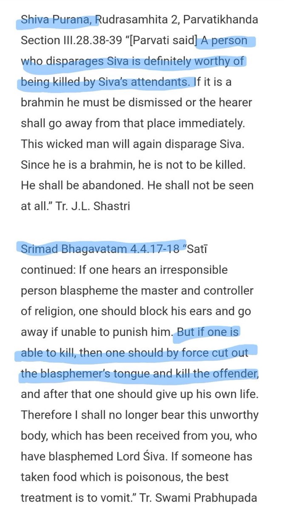
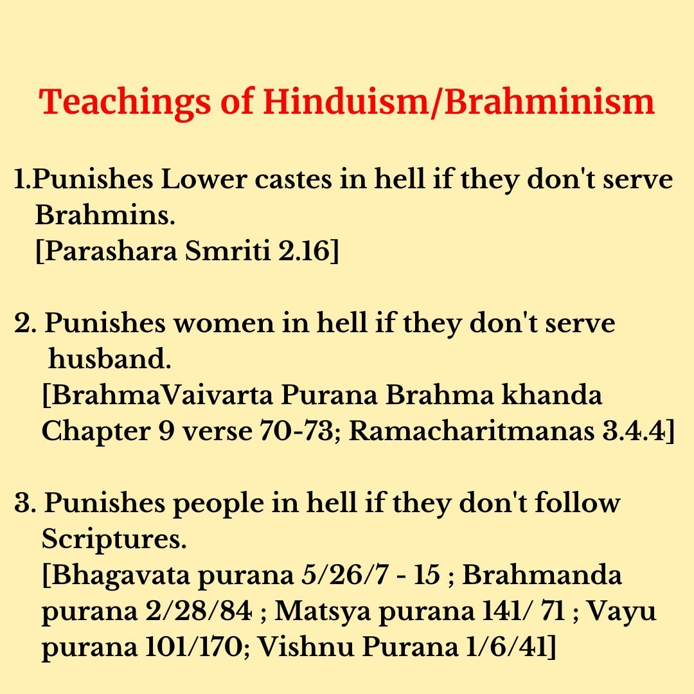

Exclusivity of salvation in Hinduism + Blasphemy and apostasy laws
Disclaimer:
Only use this note when the Hindu complains that Islam is intolerant because it teaches that all disbelievers will be in Hell while the Muslims will be in Heaven. Also use this note when the Hindu complains about blasphemy and apostasy laws in Islam
Contrary to the much hype by Hindus. One should worship a Deva, believe in the Vedas, and sacrifice to the gods in order to attain salvation, if he doesn’t then he keeps taking rebirth and is also put in hell in between the cycles of birth as punishment. Attaining heaven is the main aim of Abrahamic religions but attaining salvation is the main aim of Hinduism. It’s mentioned in the Vedas: 👇
Rig Veda 9.73.9 “The thread of the cosmic sacrifice, spread over the ultraphychic filter, extends as if, by its act up to the tip of venerable Lord’s tongue; the prudent devotees attain it; but he who is incompetent and faithless shall sink into the pit of hell, even whilst he is in this world.” Tr. Svami Satya Prakash Saraswati
Rig Veda 1.164.39 “They are atheists and of weak intellect, and continually remain sunk in the depths of misery and pain who do not believe in, know, and commune with, Him who is Resplendent, All-glorious, All-Holy, All-knowledge, sustainer of the sun, the earth and other planets, Who pervades all like ether, is the Lord of all and is above all devatas. It is by the knowledge and contemplation of God alone that all men attain true happiness.” Tr. Dr. Chiranjiva Bhardwaja, as mentioned in the book Satyarth Prakash, By Swami Dayanand Saraswati, Ch 7, page 203.
——
Krishna said:
Gita 9.3 “Those who are not faithful in this devotional service cannot attain Me, O conqueror of enemies. Therefore they return to the path of birth and death in this material world.” Tr. Swami Prabhupada
Srimad Bhagavatam 11.21.1 “The Supreme Personality of Godhead said: Those who give up these methods for achieving Me, which consist of devotional service, analytic philosophy and regulated execution of prescribed duties, and instead, being moved by the material senses, cultivate insignificant sense gratification, certainly undergo the continual cycle of material existence.” Tr. Swami Prabhupada
——
He also said:
Gita 8.11-13 “Persons who are learned in the Vedas, who utter oṁ-kāra, and who are great sages in the renounced order enter into Brahman. Desiring such perfection, one practices celibacy. I shall now briefly explain to you this process by which one may attain salvation. The yogic situation is that of detachment from all sensual engagements. Closing all the doors of the senses and fixing the mind on the heart and the life air at the top of the head, one establishes himself in yoga. After being situated in this yoga practice and vibrating the sacred syllable oṁ, the supreme combination of letters, if one thinks of the Supreme Personality of Godhead and quits his body, he will certainly reach the spiritual planets.” Tr. Swami Prabhupada
Gita 4.40 “The ignorant fool, one without faith in Vedic scriptures, and one afflicted by inner doubt and uncertainty is ruined and for one afflicted by doubt and uncertainty there is no happiness in this world nor the next.”
Brahma Purana 65.71-73 “Thus O brahmins is the greatest abode of Visnu endowed with all enjoyable pleasures and attributes. It is conducive to the pleasures of everyone. It is holy and full of mysteries. Atheists and profligates do not go there. Nor do the following go there viz.-the ungrateful and those who are of uncontrollable sense-organs. The devotees of Visnu who worship Vasudeva the preceptor of the universe with devotion, go to the world of Visnu.” Tr. Board of Scholars, edited by J.L. Shastri
——
Skanda Purana II.ii.26.28-33 “…One who installs the idol of Hari in accordance with the injunctions in the Mansion does not get involved in the bondage of physical bodies. He goes to the great region of Visnu.” Tr. G.V. Tagare
Narada Purana I.41.106 “It is only through the repetition of the names of Hari that redemption is attained by the people who commit sins, who are beyond the pale of Vedic path and who are wanting in mental purity.” Tr. G.V. Tagare
Srimad Bhagavatam 7.1.32 “Somehow or other, one must consider the form of Kṛṣṇa very seriously. Then, by one of the five different processes mentioned above, one can return home, back to Godhead. Atheists like King Vena, however, being unable to think of Kṛṣṇa’s form in any of these five ways, cannot attain salvation. Therefore, one must somehow think of Kṛṣṇa, whether in a friendly way or inimically.” Tr. Swami Prabhupada
Srimad Bhagavatam 5.26.3 “…And for one who acts impiously and ignorantly because of atheism, the resultant hellish life is the worst. Because of ignorance, every living entity has been carried by various desires into thousands of different hellish planets since time immemorial. I shall try to describe them as far as possible.” Tr. Swami Prabhupada
Srimad Bhagvatam 6.1.40 “The Yamadūtas replied: That which is prescribed in the Vedas constitutes dharma, the religious principles, and the opposite of that is irreligion. The Vedas are directly the Supreme Personality of Godhead, Nārāyaṇa, and are self-born. This we have heard from Yamarāja.” Tr. Swami Prabhupada
——
Srimad Devi Bhagavatam 6.6.29-32. “The Munis said:– “O King! All the creatures certainly enjoy the fruits of their Karmas, whether good or bad; how then, can persons, of perverted intellect, obtain peace when they do mischief to others. The treacherous persons certainly go to hell and suffer miseries always. The slayers of Brâhmanas and the drunkards may get liberation; but never the faithless and those who go against their friends get off free; these will have to suffer undoubtedly in the hells.” Tr. Swami Vijnananda
Bali to Rama:
👇
Ramayana of Valmiki, Kishkindha Kanda 4.17.36 “The regicide, the brahmincide, the slayer of the cow, the thief and the one who finds pleasure in the destruction of other beings, the unbeliever and the one who weds before his elder brother, all these enter hell…” Tr. Hari Prasad Shastri
Vayu Purana section II.15.127 “These five do not attain the benefit of pilgrimage: those who have no faith, sinners, atheists, permanent doubters and those who always seek a cause (for everything).” Tr. G.V. Tagare, edited by G.P. Bhatt
Srimad Devi Bhagavatam 6.11.57-65. “Vyâsa said:– O King! There is only one path and none other which can save a man from the sin of this Kâlî; and that is this:– The Jîvas must meditate on the lotus-feet of the Highest Devî for the purification of all their faults and sins. O King! There is so much strength in Her sin-destroying Name, that the amount of sin in this world falls much less in proportion to that. Where, then, is the cause of fear? Her Name, uttered at random, even in an unconscious state, bestows so much unspeakable results that even Hari, Hara and others have not the capacity to know that.” Tr. Swami Vijnananda
Kurma Purana II.26.67 “A person who knows Dharma should not offer even water to an atheist or a heretic or to a sceptic or to a person who does not know the Vedas.” Tr. G.V. Tagare
Skanda Purana V.iii.227.1-10 “[Sri Markandeya said]…Persons who have no faith, those who are atheists fall into the terrible Naraka. So said Paramesvara…” Tr. G.V. Tagare
Vamana Purana 40.35-36 “Therefore Dharma is not to be shunned, for Dharma is the supreme goal. Men devoid of Dharma go to the wide Raurava hell. Dharma, they say, enables a safe passage in heaven and here and Adharma leads to downfall in this world and the next.” Tr. Anand Swarup Gupta
——
According to Hindu texts, Buddhists will go to Hell 👇
Srimad Devi Bhagavatam 11.1.25-37 “…Whatever goes clearly against the Vedas can in no way be accepted as a proof. In matters concerning Dharma, the Vedas is the Sole Proof. Therefore that which is not against the Vedas can be taken as proof; otherwise not. Whoever acts Dharma according to other proofs than what is ordained in the Vedas, goes to the hell in the abode of Yama to get his lesson. So the Dharma that is by all means to be accepted as such, is what is stated in the Vedas. The Smritis, the Purânas, or the Tantra S’âstras can be taken also as authoritative when they are not conflicting to Vedas. Any other S’âstras can be taken as authoritative when it is fundamentally coincident with the Vedas. Else it can never be accepted. Those who do injury to others even by the blade of a Kus’a grass used as a weapon, go to hell with their heads downwards and their feet upwards. Those that follow their own sweet free will, that take up any sort of dress (e. g. Bauddhas), those that follow the philosophical doctrines called Pâs’upatas, and the other hermits and saints and persons that take up other vows contrary to the religions of the Vedas, for example, the Vaikhânasa followers, those who brand their bodies by the hot Mudrâs, at the places of pilgrimages, e. g. Dvârkâ, etc., they go to hell with their bodies scorched by red hot brands (Tapta Mudrâs). So persons should act according to the excellent religions commanded by the Vedas…” Tr. Swami Vijnananda
——
Apostasy punishment in Hinduism
👇
Narada Purana, Uttarabhaga 21.38 “These persons are to be punished and given capital punishment- he who eschews Visnu the foremost among the gods and worships any other deity…” Tr. G.V. Tagare
Srimad Bhagavatam 5.26.14-15
He that, even when no danger threatens, forsakes the path prescribed by the Vedas and follows that of a heretic, is thrown by the servants of Yama into the hellish region named Asipatravana
There are some examples where demons devoted to Devas were killed soon after they left the Vedic religion and embraced other religions like Buddhism and Jainism. There is a story of the sons of Raji being killed by Indra after Brihaspati deludes them to leave the Vedic religion and converts them to Jainism. 👇
Matysa Purana 24.47-49 “…Brihaspati then went and deluded the other sons of Raji with false philosophy and established the Jina religion opposed to the Vedas, though himself a knower of the Vedas and Indra on finding the sons of Brihaspati propagating a religion different from the Vedas based on a show of reason only killed them with his mighty thunderbolt.” Tr. Taluqdar of Oudh, edited by B.D. Basu
——
Punishment for Blasphemy in Hinduism
👇

